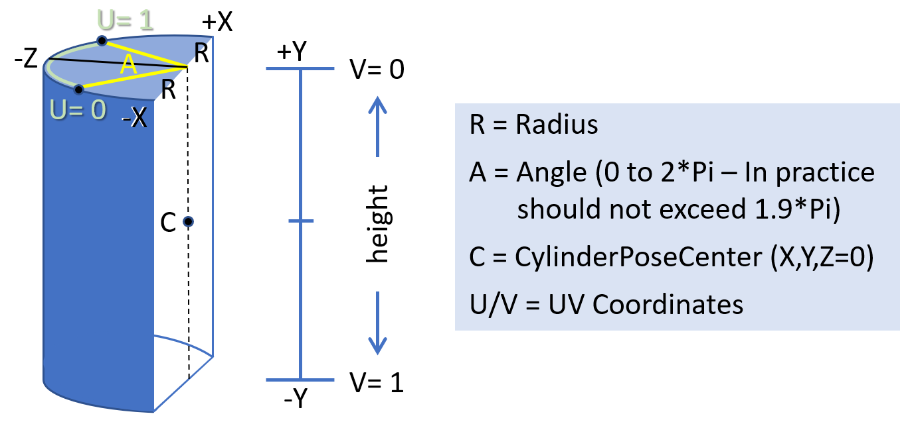

1. Introduction
The spec adds support of `composition` layers to the WebXR spec. The benefits of layers are as follows:
-
Performance and judder Composition layers are presented at the frame rate of the compositor (i.e. native refresh rate of HMD) rather than at the application frame rate. Even when the application is not updating the layer’s rendering at the native refresh rate of the compositor, the compositor might be able to re-project the existing rendering to the proper pose. This results in smoother rendering and less judder. Another feature of layers is that each of them can have different resolution. This allows the application to scale down the main eye buffer resolution on low performance systems, but keeping essential information, such as text or a map, in its own layer at a higher resolution.
-
Legibility/visual fidelity The resolution for eye-buffers for 3D world rendering can be set to relatively low values especially on low performance systems. It would be impossible to render high fidelity content, such as text, in this case. Each layer may have its own resolution and it will be re-sampled only once by the compositor (in contrary to the traditional approach with rendering layers via WebGL where the layer’s content got re-sampled at least twice: once when rendering into WebGL eye-buffer (and losing a lot of details due to limited eye-buffer resolution) and the second time by the compositor).
-
Power consumption / battery life Due to reduced rendering pipeline, the lack of double sampling and no need to update the layer’s rendering each frame, the power consumption is expected to be improved.
-
Latency Pose sampling for composition layers may occur at the very end of the frame and then certain reprojection techniques could be used to update the layer’s pose to match it with the most recent HMD pose. This may significantly reduce the effective latency for the layers' rendering and as a result improve overall experience.
1.1. Terminology
1.2. Application flow
If an author wants to use layers, they have to go through these steps:
-
request support through
requiredFeaturesoroptionalFeaturesinrequestSession() -
create a XRWebGLLayerFactory or XRMediaLayerFactory
-
create layers with these factories
-
add the layers to
XRRenderStateInitand callupdateRenderState() -
during
requestAnimationFrame()for webgl layers, draw content each gl layer
2. Model
In order for the applications to signal their interest in using layers during a session, the session MUST be requested with appropriate feature descriptor. The string layers is introduced by this module as a new valid feature descriptor for WebXR Layers feature.
navigator. xr. requestSession( 'immersive-vr' , { optionalFeatures: [ 'layers' ] }
Layers are only supported for XRSessions created with XRSessionMode of "immersive-vr" or "immersive-ar". "inline" sessions MUST not support layers.
3. Layer types
3.1. Mono and stereo layers
A stereo layer MUST supply a different view to render to for each eye. Stereo layers should be refreshed close to the device’s native frame rate.A mono layer MUST supply a single view which is shown to each eye. There is no requirement to refresh mono layers repeatedly.
The XR Compositor MUST ensure that layers are presented correctly in stereo to the observer.
3.2. XRLayer
Every layer except XRWebGLLayer is derived from XRLayer. XRLayer defines a set of common attributes and behaviors acress all layer types.interface {XRLayer readonly attribute unsigned long pixelWidth ;readonly attribute unsigned long pixelHeight ;attribute boolean blendTextureSourceAlpha ;attribute boolean chromaticAberrationCorrection ;void (); };destroy
The pixelWidth and pixelHeight attributes
return the width and height of the GL attachments, respectively. If there are no attachments, they will return 0.
The blendTextureSourceAlpha attribute enables the layer’s texture alpha channel.
The chromaticAberrationCorrection attribute is a hit for the XR Compositor to
enable optical chromatic aberration correction for the layer. Only valid if this isn’t done by default.
describe what chromaticAberrationCorrection does.
destroy() will delete the underlying attachments. If there are no attachments, this function does nothing.
Each XRLayer has a context object which is an instance
of either a WebGLRenderingContext or a WebGL2RenderingContext.
Each XRLayer has an associated session, which is the XRSession it was created with.
3.3. XRProjectionLayer
AnXRProjectionLayer is a layer that fills the entire view of the observer.
Projection layers should be refreshed close to the device’s native frame rate.
interface :XRProjectionLayer XRLayer {readonly attribute boolean ignoreDepthValues ; };
The ignoreDepthValues attribute, if true, indicates the XR Compositor MUST NOT make use of values in the depth buffer attachment when rendering. When the attribute
is false it indicates that the content of the depth buffer attachment will be used by the XR Compositor and is expected to be representative of the scene rendered into the layer.
3.4. XRQuadLayer
AXRQuadLayer renders a layer that takes up a flat rectangular space in the virtual environment.
Only the front of the layer MUST be visible; the back face MUST not be drawn by the XR Compositor.
A XRQuadLayer has no thicknes. It is a two-dimensional object positioned and oriented in 3D space. The position of a quad refers to the center of the quad.
interface :XRQuadLayer XRLayer {readonly attribute boolean stereo ;attribute XRReferenceSpace referenceSpace ;attribute XRRigidTransform transform ;attribute float width ;attribute float height ; };
The stereo attribute returns if the layer is rendered in stereo.
The transform attribute sets and returns the offset and orientation relative to the referenceSpace attribute.
The width and height attributes
set and return the width and height of the layer in meters.
3.5. XRCylinderLayer
AXRCylinderLayer renders a layer that takes up a curved rectangular space in the virtual environment.
Only the front of the layer MUST be visible; the back face MUST not be drawn by the XR Compositor.
A XRCylinderLayer has no thicknes. It is a two-dimensional object positioned and oriented in 3D space. The position of the cylinder refers to the center of the quad.
interface :XRCylinderLayer XRLayer {readonly attribute boolean stereo ;attribute XRReferenceSpace referenceSpace ;attribute XRRigidTransform transform ;attribute float radius ;attribute float centralAngle ;attribute float aspectRatio ; };
The stereo attribute returns if the layer is rendered in stereo.
The transform attribute sets and returns the offset and orientation relative to the referenceSpace attribute.
The radius attribute controls the radius in meters of the cylinder.
The centralAngle attribute controls the angle in degrees of the visible section of the cylinder.
It grows symmetrically around the 0 angle.
The aspectRatio attribute controls the ratio of the visible cylinder section.

3.6. XREquirectLayer
AXREquirectLayer renders a layer where the XR Compositor MUST map an equirectangular coded data onto the inside of a sphere.
this section needs clarification
interface :XREquirectLayer XRLayer {readonly attribute boolean stereo ;attribute XRReferenceSpace referenceSpace ;attribute XRRigidTransform transform ;attribute float radius ;attribute float scaleX ;attribute float scaleY ;attribute float biasX ;attribute float biasY ; };
The stereo attribute returns if the layer is rendered in stereo.
The transform attribute sets and returns the offset and orientation relative to the referenceSpace attribute.
The radius attribute is the non-negative radius of the sphere. Values of less than or
equal to zero or infinity are treated as an infinite sphere.
The scaleX and scaleY attributes
set and return a scale of the texture coordinates after the mapping to 2D.
The biasX and biasY attributes
set and return a bias of the texture coordinates after the mapping to 2D.
3.7. XRCubeLayer
AXREquirectLayer renders a layer where the XR Compositor renders directly from a cubemap.
this section needs clarification
interface :XRCubeLayer XRLayer {readonly attribute boolean stereo ;attribute XRReferenceSpace referenceSpace ;attribute DOMPoint orientation ; };
The stereo attribute returns if the layer is rendered in stereo.
The orientation attribute sets and returns the orientation relative to the referenceSpace attribute.
4. Rendering
4.1. XRSubImage
TheXRSubImage object represents what viewport of the GPU texture to use.
interface {XRSubImage readonly attribute XRViewport viewport ; };
NOTE: this class is designed to accomodate future extensions
The viewport attribute returns the XRView to use when rendering the sub image.
4.2. XRWebGLSubImage
TheXRWebGLSubImage object is used during rendering of the layer.
interface :XRWebGLSubImage XRSubImage {readonly attribute WebGLTexture colorTexture ;readonly attribute WebGLTexture ?depthStencilTexture ;readonly attribute unsigned long ?imageIndex ; };
The colorTexture attribute returns the color WebGLTexture for the XRLayer.
The depthStencilTexture attribute returns the depth/stencil WebGLTexture for the XRLayer.
If the layer was created without depth/stencil, this attribute returns null.
The imageIndex attribute returns the offset into the texture array. Valid only for layers
that were requested with TEXTURE_2D_ARRAY.
This colorTexture and depthStencilTexture are only valid during requestAnimationFrame() callback and becomes invalid as soon as the callback returns.
5. GPU layer and view creation
5.1. Overview
When a layer is created it is backed by a GPU resource, typically a texture, provided by one of the Web platform’s graphics APIs. In order to
specify which API is providing the layer’s GPU resources an Layer Factory for the API in question must be created.
Each graphics API may have unique requirements that must be satisfied before a context can be used in the creation of a layer factory. For example,
a WebGLRenderingContext must have its xrCompatible flag set prior to being passed to the constructor of the XRWebGLLayerFactory instance.
Any interaction between the XRSession the graphics API, such as allocating or retrieving textures, will go through this XRWebGLLayerFactory instance, and the exact mechanics
of the interaction will typically be API specific. This allows the rest of the WebXR API to be
graphics API agnostic and more easily adapt to future advances in rendering techniques.
Once a layer factory instance has been acquired, it can be used to create a variety of XRLayer. Any layers created by that layer factory will then be able
to query the associated GPU resources each frame, generally expected to be the native API’s texture interface.
The various layer types are created with the request____Layer series of methods on the layer factory instance. Information about the graphics resources required, such as whether or not to allocate a depth buffer or alpha channel, are passed in at layer creation time and will be immutable for the lifetime of the layer. The method will return a promise that will resolve to the associated XRLayer type once the graphics resources have been created and the layer is ready to be displayed.
Some layer types may not be supported by the XRSession. If a layer type isn’t supported the returned Promise will reject. XRProjectionLayer must be supported by all XRSessions.
5.2. XRProjectionLayerInit
TheXRProjectionLayerInit dictionary represents a set of configurable values that describe how a XRProjectionLayer is initialized.
dictionary {XRProjectionLayerInit boolean depth =true ;boolean stencil =false ;boolean alpha =true ;double scaleFactor = 1.0; };
The depth attribute defines if the XRProjectionLayer will have a depth buffer.
The stencil attribute defines if the XRProjectionLayer will have a stencil buffer.
The alpha attribute defines if the XRProjectionLayer will have an alpha channel.
The scaleFactor attribute defines the value that the session’s recommended WebGL framebuffer resolution must be multiplied by determining the resolution of the layer’s attachments.
5.3. XRLayerInit
TheXRLayerInit dictionary represents a set of configurable values that describe how XRQuadLayer, XRCylinderLayer, XREquirectLayer and XRCubeLayer are initialized.
dictionary {XRLayerInit required unsigned long pixelWidth ;required unsigned long pixelHeight ;boolean =stereo false ;boolean depth =false ;boolean stencil =false ;boolean alpha =true ; };
the pixelWidth and pixelHeight attributes define
the rectangular dimensions of the XRLayer
The depth attribute defines if the XRLayer view will have a depth buffer.
The stencil attribute defines if the XRLayer view will have a stencil buffer.
The alpha attribute defines if the XRLayer view will have an alpha channel.
5.4. XRWebGLLayerFactory
TheXRWebGLLayerFactory object is used to create layers that have a GPU backend.
interface {XRWebGLLayerFactory constructor (XRSession ,session XRWebGLRenderingContext );context readonly attribute double ;nativeProjectionScaleFactor Promise <XRProjectionLayer >requestProjectionLayer (GLenum ,textureTarget optional XRProjectionLayerInit );init Promise <XRQuadLayer >requestQuadLayer (GLenum ,textureTarget XRLayerInit );init Promise <XRCylinderLayer >(requestCylinderLayer GLenum ,textureTarget XRLayerInit );init Promise <XREquirectLayer >(requestEquirectLayer GLenum ,textureTarget XRLayerInit );init Promise <XRCubeLayer >(requestCubeLayer XRLayerInit );init XRWebGLSubImage ?getSubImage (XRLayer ,layer XRFrame );frame XRWebGLSubImage ?getViewSubImage (XRLayer ,layer XRView ); };view
Each XRWebGLLayerFactory has a context object which is an instance
of either a WebGLRenderingContext or a WebGL2RenderingContext.
Each XRWebGLLayerFactory has an associated session, which is the XRSession it was created with.
Each XRLayer created through XRWebGLLayerFactory has an internal colorTextures which is an array of WebGLTexture for color textures and
an internal depthStencilTextures whcih is an array of WebGLTexturefor depth/stencil textures.
The XRWebGLLayerFactory(session, context) constructor
MUST perform the following steps when invoked:
-
Let factory be a new
XRWebGLLayerFactory -
If session’s ended value is
true, throw anInvalidStateErrorand abort these steps. -
If context is lost, throw an
InvalidStateErrorand abort these steps. -
If session is not an immersive session, throw an
InvalidStateErrorand abort these steps. -
If context’s XR compatible boolean is
false, throw anInvalidStateErrorand abort these steps. -
Initialize factory’s context to context.
-
Initialize factory’s session to session.
-
Return factory.
can a user construct more than 1 factory?
The nativeProjectionScaleFactor function returns the value that the session’s recommended WebGL framebuffer resolution MUST be multiplied by to yield the session’s native WebGL framebuffer resolution.
requestProjectionLayer(GLenum textureTarget, optional XRProjectionLayerInit init) method creates a new XRProjectionLayer.
When this method is invoked, it MUST run the following steps:
-
Let promise be a new Promise.
-
Let session be the target
XRWebGLLayerFactory's session. -
Let context be the target
XRWebGLLayerFactory's context. -
If session’s ended value is
true, reject promise with anInvalidStateErrorand return it. -
If context is lost, reject promise with an
InvalidStateErrorand return it. -
Run the following steps in parallel:
-
Let layer be a new
XRProjectionLayer -
Initialize layer’s context to context.
-
Initialize layer’s session to session.
-
Initialize layer’s
ignoreDepthValuesas follows:- If layerInit’s
depthvalue isfalseand the XR Compositor will make use of depth values - Initialize layer’s
ignoreDepthValuestofalse - Otherwise
- Initialize layer’s
ignoreDepthValuestotrue
- If layerInit’s
-
Initialize layer’s
colorTexturesas follows:- If context is a
WebGL2RenderingContextand textureTarget isTEXTURE_2D_ARRAY - Initialize layer’s
colorTexturesto a array with a single new instance ofWebGLTexturecreated as a texture array with context and layerInit’salphavalues. - Else if textureTarget is
TEXTURE_2D - Initialize layer’s
colorTexturesto a array with 2 new instances ofWebGLTexturecreated as 2D texture with context and layerInit’salphavalues. - Otherwise
- reject promise with an
InvalidStateErrorand return it.
- If context is a
-
Initialize layer’s
depthStencilTexturesas follows:- If layerInit’s
depthandstencilare not set - Initialize layer’s
depthStencilTexturesto an empty array - Else if context value is a
WebGL2RenderingContextand textureTarget isTEXTURE_2D_ARRAY - Initialize layer’s
depthStencilTexturesto an array with a single new instance ofWebGLTexturecreated as a texture array with context and layerInit’sdepthandstencilvalues. - Else if textureTarget is
TEXTURE_2D - Initialize layer’s
depthStencilTexturesto an array with 2 new instances ofWebGLTexturecreated as 2D texture with context and layerInit’sdepthandstencilvalues. - Otherwise
- reject promise with an
InvalidStateErrorand return it.
- If layerInit’s
-
Allocate and initialize resources compatible with session’s XR device, including GPU accessible memory buffers, as required to support the compositing of layer.
-
If layer’s resources were unable to be created for any reason, throw an
OperationErrorand abort these steps. -
Resolve promise with layer.
-
-
Return promise.
define "opaque" WebGLTexture
requestQuadLayer(GLenum textureTarget, XRLayerInit init) method creates a new XRQuadLayer.
When this method is invoked, it MUST run the following steps:
-
Let promise be a new Promise.
-
If the device does not support the creation of
XRQuadLayer, throw anNotSupportedErrorand abort these steps. -
Let session be the target
XRWebGLLayerFactory's session. -
Let context be the target
XRWebGLLayerFactory's context. -
If session’s ended value is
true, reject promise with anInvalidStateErrorand return it. -
If context is lost, reject promise with an
InvalidStateErrorand return it. -
Run the following steps in parallel:
-
Let layer be a new
XRQuadLayer -
Initialize layer’s context to context.
-
Initialize layer’s session to session.
-
Initialize layer’s
colorTexturesas follows:- If context is a
WebGL2RenderingContextand textureTarget isTEXTURE_2D_ARRAY - Initialize layer’s
colorTexturesto a array with a single new instance ofWebGLTexturecreated as a texture array with context and layerInit’salphavalues. - Else if textureTarget is
TEXTURE_2D - Initialize layer’s
colorTexturesto a array with 2 new instances ofWebGLTexturecreated as 2D texture with context and layerInit’salphavalues. - Otherwise
- reject promise with an
InvalidStateErrorand return it.
- If context is a
-
Initialize layer’s
depthStencilTexturesas follows:- If layerInit’s
depthandstencilare not set - Initialize layer’s
depthStencilTexturesto an empty array. - Else if context value is a
WebGL2RenderingContextand textureTarget isTEXTURE_2D_ARRAY - Initialize layer’s
depthStencilTexturesto an array with a single new instance ofWebGLTexturecreated as a texture array with context and layerInit’sdepth,stencil,pixelWidth, andpixelHeightvalues. - Else if textureTarget is
TEXTURE_2D - Initialize layer’s
depthStencilTexturesto an array with 2 new instances ofWebGLTexturecreated as 2D texture with context and layerInit’sdepth,stencil,pixelWidth, andpixelHeightvalues. - Otherwise
- reject promise with an
InvalidStateErrorand return it.
- If layerInit’s
-
Allocate and initialize resources compatible with session’s XR device, including GPU accessible memory buffers, as required to support the compositing of layer.
-
If layer’s resources were unable to be created for any reason, throw an
OperationErrorand abort these steps. -
Resolve promise with layer.
-
-
Return promise.
NOTE: how can we list all the other layer creation methods without repeating?
getSubImage(XRLayer layer, XRFrame frame) method creates a new XRWebGLSubImage.
When this method is invoked, it MUST run the following steps:
-
Let subimage be a new
XRWebGLSubImage -
If layer is a
XRProjectionLayer, throw anInvalidStateErrorand abort these steps. -
If layer’s stereo attribute is true, throw an
InvalidStateErrorand abort these steps. -
If frame’s
sessionis not equal to layer’s session, throw anInvalidStateErrorand abort these steps. -
If frame’s active boolean is
false, throw anInvalidStateErrorand abort these steps. -
Initialize subimage’s
colorTexturewith the layer’s colorTexture. -
Initialize subimage’s
depthStencilTextureas follows:-
If the layer has a depthStencilTexture
- Initialize subimage’s
depthStencilTexturewith the layer’s depthStencilTexture. - Otherwise
- Initialize subimage’s
depthStencilTexturewith null.
- Initialize subimage’s
-
return subimage
getViewSubImage(XRLayer layer, XRView view) method creates a new XRWebGLSubImage.
When this method is invoked, it MUST run the following steps:
-
Let subimage be a new
XRWebGLSubImage -
If layer is a not
XRProjectionLayerand the stereo attribute is false, throw anInvalidStateErrorand abort these steps. -
let frame be view’s
frame -
If frame’s
sessionis not equal to layer’s session, throw anInvalidStateErrorand abort these steps. -
If frame’s active boolean is
false, throw anInvalidStateErrorand abort these steps. -
Initialize subimage’s
colorTextureas follows:- If the layer was created with a textureTarget of
TEXTURE_2D_ARRAY - Initialize subimage’s
colorTexturewith the colorTexture. - Otherwise
- Initialize subimage’s
colorTexturewith the colorTexture that corresponds to the view.
- If the layer was created with a textureTarget of
-
Initialize subimage’s
depthStencilTextureas follows:- If the layer’s
depthStencilTexturesis an empty array. - Initialize subimage’s
depthStencilTexturewith null. - Else if the layer was created with a textureTarget of
TEXTURE_2D_ARRAY - Initialize subimage’s
depthStencilTexturewith the depthStencilTexture. - Otherwise
- Initialize subimage’s
depthStencilTexturewith the depthStencilTexture that corresponds to the view.
- If the layer’s
-
Initialize subimage’s
imageIndexas follows:- If the layer was created with a textureTarget of
TEXTURE_2D_ARRAY - Initialize subimage’s
imageIndexwith the offset that corresponds to the view. - Otherwise
- Initialize subimage’s
imageIndexwith null.
- If the layer was created with a textureTarget of
-
return subimage
6. Video layer creation
6.1. XRMediaLayout
TheXRMediaLayout enum defines the layout of the video.
enum {XRMediaLayout "mono" ,"stereo-left-right" ,"stereo-top-bottom" };
-
A media layout of
monoindicates that the video is mono. -
A media layout of
stereo-left-rightindicates that the video is in stereo and divided left to right. -
A media layout of
stereo-top-bottomindicates that the video is in stereo and divided top to bottom.
6.2. XRMediaLayerInit
TheXRMediaLayerInit dictionary represents a set of configurable values that describe how a XRLayer containing a video
is initialized.
dictionary {XRMediaLayerInit XRMediaLayout layout = "mono";boolean invertStereo =false ; };
The layout attribute defines the layout of the video in the XRLayer.
The invertStereo attribute defines if natural location of each view in the video
should be inverted.
6.3. XRMediaLayerFactory
TheXRWebGLLayerFactory object is used to create layers that display the content of an HTMLVideoElement .
interface {XRMediaLayerFactory (constructor XRSession );session Promise <XRQuadLayer >(requestQuadVideoLayer HTMLVideoElement ,video optional XRMediaLayerInit = {});init Promise <XRCylinderLayer >(requestCylinderVideoLayer HTMLVideoElement ,video optional XRMediaLayerInit = {});init Promise <XREquirectLayer >(requestEquirectVideoLayer HTMLVideoElement ,video optional XRMediaLayerInit = {}); };init
7. Security and Privacy Considerations
7.1. Timing of the composition
Composition timing MUST be independent of the content that is rendered. Moreover, content in a layer MUST not be observable in other layers.
If possible, composition of layers should happen outside the browser to reduce risk of timing attacks or other security vulnerabilities.